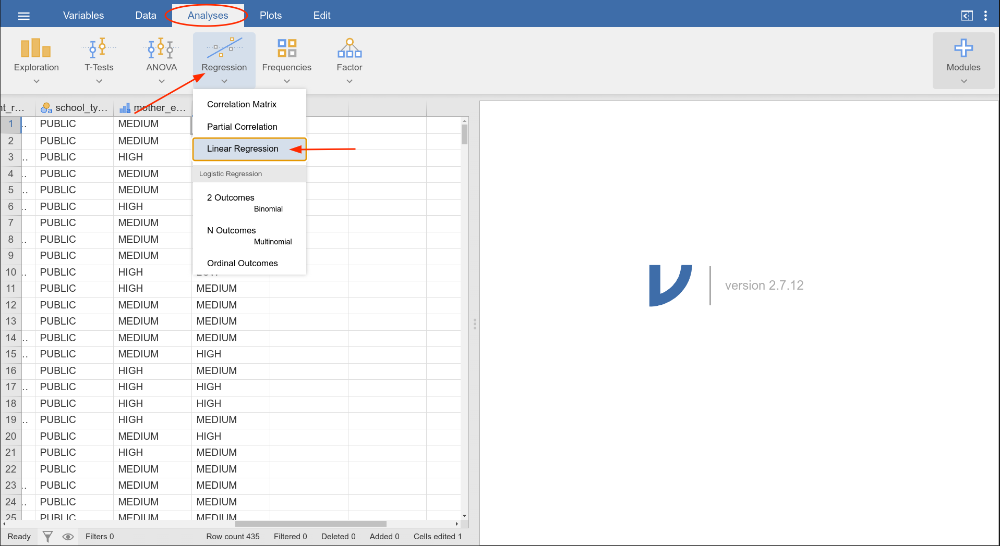

parent_read_to_child μετά τις αλλαγές.
Έστω τώρα ότι θέλουμε να διαμορφώσουμε ένα μοντέλο γραμμικής παλινδρόμησης για τη συνεχή μεταβλητή child_reading_irt που μετρά την αναγνωστική ικανότητα των παιδιών στο νηπιαγωγείο. Για την πρόβλεψη της τιμής της child_reading_irt θα χρησιμοποιήσουμε τις εξής μεταβλητές του δείγματος:
child_gender: το φύλο του παιδιού.child_age: η ηλικία του παιδιού μετρημένη σε μήνες.parent_read_to_child: η συχνότητα μέσα στην εβδομάδα που οι γονείς διαβάζουν στο παιδί.socioeconomic_status: η κοινωνικο/οικονομική κατάσταση της οικογένειας.school_type: το είδος του σχολείου που πηγαίνει το παιδί (ιδιωτικό / δημόσιο).mother_education: το μορφωτικό επίπεδο της μητέρας.father_education: το μορφωτικό επίπεδο του πατέρα.Για να τρέξουμε την παραπάνω γραμμική παλινδρόμηση (και αφού έχουμε εφαρμόσει την αρχική επεξεργασία) από την καρτέλα των Αναλύσεων (Analyses), διαλέγουμε την παλινδρόμηση (Regression) και στο μενού που ανοίγει διαλέγουμε την γραμμική παλινδρόμηση (Linear regression), όπως φαίνεται και στο Figure 1. Εν συντομία στο Jamovi, ακολουθούμε Analyses > Regression > Linear Regression.
parent_read_to_child μετά τις αλλαγές.
Το Jamovi διαχωρίζει τις μεταβλητές που χρησιμοποιούνται σε μία γραμμική παλινδρόμηση σε τρεις κατηγορίες:
Για να ορίσουμε το μοντέλο της γραμμικής παλινδρόμησης πρέπει σύρουμε και να αφήσουμε τις μεταβλητές που θα χρησιμοποιήσουμε στα σωστά σημεία (Figure 2):
child_reading_irt είναι η εξαρτημένη μεταβλητή (dependent variable), η μεταβλητή δηλαδή που θέλουμε να προβλέψουμε και άρα θα πάει στο κουτί Dependent Variable.child_age και socioeconomic_status είναι συνεχείς (αριθμητικές), άρα θα πάνε στο κουτί Covariates.child_gender, parent_read_to_child, school_type, mother_education και father_education είναι όλες κατηγορικές (ορίζουν κατηγορίες) και άρα θα πάνε στο κουτί Factors.Στο δεξί παράθυρο του Jamovi εμφανίζονται τα αποτελέσματα της γραμμικής παλινδρόμησης. Αν κάνουμε αλλαγές στον ορισμό του μοντέλου, τα αποτελέσματα ενημερώνονται αυτόματα. Στον πρώτο πίνακα των αποτελεσμάτων έχουμε τα μέτρα επίδοσης του μοντέλου παλινδρόμησης που διαλέξαμε (Figure 3). Βλέπουμε ότι η προεπιλογή είναι να παρουσιάζονται μόνο το \(R^2\) και η τετραγωνική του ρίζα. Στη συγκεκριμένη περίπτωση, το \(R^2\) είναι αρκετά χαμηλό (0.186). Δηλαδή, μόνο περίπου το 18.6% της συνολικής διασποράς της εξαρτημένης μεταβλητής (child_reading_irt) εξηγείται από το μοντέλο της γραμμικής παλινδρόμησης που υπολογίσαμε.
Αν θέλουμε να δούμε και τα αποτελέσματα και άλλων μετρικών που εξετάζουν την ποιότητα του μοντέλου που υπολογίσαμε μπορούμε να τα προσθέσουμε πατώντας στο μενού Model Fit. Από εκεί έχει μία σειρά από επιλογές που μπορούμε να διαλέξουμε. Για παράδειγμα, μπορούμε να υπολογίσουμε το προσαρμοσμένο \(R^2\) διαλέγοντας και την επιλογή \(\text{Adjusted} R^2\) (Figure 4). Το προσαρμοσμένο \(R^2\) προσθέτει ένα κόστος στη συμπερίληψη μεταβλητών στο μοντέλο με στόχο να διασφαλιστεί ότι οι επιπλέον μεταβλητές εξηγούν σημαντικό μέρος της ανεξήγητης διασποράς του μοντέλου χωρίς αυτές.
Είδαμε ότι το \(R^2\) του μοντέλου είναι αρκετά χαμηλό. Άρα έχουμε λόγο να ανησυχούμε αν όντως έχει νόημα να κάνουμε όλη αυτή την άσκηση υπολογισμού το μοντέλου γραμμικής παλινδρόμησης. Με άλλα λόγια, αν το μοντέλο το οποίο υπολογίσαμε μας δίνει καλύτερες προβλέψεις για την αναγνωστική ικανότητα των μαθητών (child_reading_irt) από ό,τι αν χρησιμοποιούσαμε μόνο την μέση τιμή της χωρίς καμία άλλη πληροφορία. Έχουμε δει ότι τον έλεγχο αυτό τον πραγματοποιούμε με τη χρήση του συνολικού \(F\)-test. Αυτός ο έλεγχος μπορεί να συμπεριληφθεί στα αποτελέσματα χρησιμοποιώντας το ίδιο μενού (Model Fit) (Figure 4).
Στη συγκεκριμένη περίπτωση, βλέπουμε ότι το συνολικό \(F\)-test έχει τιμή \(F=8.78\) με \(\text{p}<0.001\). Άρα μπορούμε να απορρίψουμε την \(H_0\) ότι όλα τα \(\beta\) του μοντέλου είναι \(0\) και να δεχτούμε ότι έστω και ένα από τα \(\beta\) είναι διάφορο του μηδενός. Άρα, παρά τη χαμηλή επίδοση του μοντέλου παλινδρόμησης ως προς το \(R^2\), αυτό έχει μία αξία, δηλαδή μας επιτρέπει να κάνουμε καλύτερες προβλέψεις από το να χρησιμοποιούσαμε μόνο τον μέσο όρο της child_reading_rt.
Το βασικό κομμάτι, όμως, των αποτελεσμάτων της γραμμικής παλινδρόμησης παρουσιάζεται στον παρακάτω πίνακα των αποτελεσμάτων και έχει τίτλο Model Coefficients. Το μοντέλο που θέλαμε να υπολογίσουμε είχε τη μορφή: \[ \begin{aligned} \text{child\_reading\_rt} = \beta_0 &+ \beta_1\times\text{child\_age} + \beta_2\times\text{socioeconomic\_status} \\ &+ \beta_3\times\text{child\_gender} + \beta_4\times\text{mother\_education} \\ &+ \beta_5\times\text{father\_education} + \beta_6\times\text{school\_type} \\ &+ \beta_7\times\text{parent\_read\_to\_child} \end{aligned} \]
Στο Figure 5, όμως, βλέπουμε πολύ περισσότερα αποτελέσματα από τα 8 που φαίνονται στην παραπάνω εξίσωση. Αυτό συμβαίνει γιατί το Jamovi χωρίζει τις κατηγορικές μεταβλητές σε βοηθητικές μεταβλητές. Για τον χωρισμό σε βοηθητικές μεταβλητές χρησιμοποιείται ένα επίπεδο της κατηγορικής μεταβλητής ως σημείο αναφοράς. Στο Jamovi αυτό είναι το πρώτο επίπεδο. Για παράδειγμα, στην περίπτωση του φύλου δημιουργείται η βοηθητική μεταβλητή \(X_\text{child_gender = MALE}\), η οποία παίρνει την τιμή \(1\) όταν το φύλο είναι αγόρι (MALE) και \(0\) στην αντίθετη περίπτωση.
Ομοίως, στην περίπτωση του μορφωτικού επιπέδου της μητέρας (LOW, MEDIUM, HIGH) δημιουργούνται 2 βοηθητικές μεταβλητές:
Τι γίνεται όταν το μοφωτικό επίπεδο της μητέρας είναι χαμηλό (LOW), δηλαδή το επίπεδο αναφοράς; Τότε και οι δύο βοηθητικές μεταβλητές είναι \(0\) και η επίδραση μορφωτικού επιπέδου της μητέρας απορροφάται από το \(\beta_0\). Γενικά, όταν έχουμε να κάνουμε με κατηγορικές μεταβλητές, το Jamovi θα δημιουργεί για κάθε μία από αυτές ένα πλήθος βοηθητικών μεταβλητών που παίρνουν τις τιμές 0 και 1. Το πλήθος αυτό θα είναι όσο είναι το πλήθος των επιπέδων της κατηγορικής μεταβλητής μείον 1.
Στο αρχικό μοντέλο συμπεριλάβαμε, μεταξύ άλλων, τις μεταβλητές που περιγράφουν την κοινωνικο/οικονομική κατάσταση της οικογένειας (socioeconomic_status) και μεταβλητές για το μορφωτικό επίπεδο των γονέων καθώς και το είδος του σχολείου που πηγαίνουν τα παιδιά (mother_education, father_education, school_type). Έχει νόημα να συμπεριλάβουμε τις τελευταίες τρεις μεταβλητές ή κάνουμε πάνων-κάτω την ίδια δουλειά απλώς βάζοντας στο μοντέλο την κοινωνικο/οικονομική κατάσταση; Για να το ελέγξουμε αυτό πρέπει να πραγματοποιήσουμε το μερικό \(F\)-test. Στην πράξη, το μερικό \(F\)-test συγκρίνει δύο μοντέλα, ένα με όλες τις μεταβλητές με αυτό που δεν συμπεριλαμβάνει τις τρεις μεταβλητές, δηλαδή κάνοντας την υπόθεση ότι οι συντελεστές αυτών των τριών μεταβλητών (τα \(\beta\)) είναι 0.
Στο Jamovi, για να πραγματοποιήσουμε το συγκεκριμένο έλεγχο πρέπει να διαλέξουμε το μενού Model Builder και να ορίσουμε εκεί τα δύο μοντέλα που είπαμε προηγουμένως, βάζοντας το καθένα σε ένα ξεχωριστό Block. Στο Block 1 βάζουμε τις μεταβλητές του απλούστερου μοντέλου, δηλαδή την ηλικία, την κοινωνικο/οικονομική κατάσταση, το φύλο του παιδιού και τη συχνότητα ανάγνωσης από τους γονείς (child_age, socioeconomic_status, child_gender, parent_read_to_child). Στο Block 2 βάζουμε τις επιπλέον μεταβλητές που θέλουμε να ελέγξουμε αν έχει νόημα να συμπεριληφθούν στον μοντέλο, δηλαδή το μορφωτικό επίπεδο των γονέων και το είδος του σχολείου (mother_education, father_education, school_type).
Συνήθως, είναι πιο εύκολο πρώτα να καθαρίσουμε τα Block που υπάρχουν ήδη συμπληρωμένα. Όταν το κάνετε αυτό, τα αποτελέσματα στη δεξιά μεριά της οθόνης θα χαθούν (Figure 6). Στο επόμενο βήμα θα συμπληρωθούν ξανά με τη δημιουργία των δύο μοντέλων παλινδρόμησης που έχουμε περιγράψει παραπάνω.
Στη συνέχεια, δημιουργούμε ξανά τα Block όπως φαίνεται στο Figure 7.
Τα αποτελέσματα του μερικού \(F\)-test εμφανίζονται στη δεξιά μεριά της οθόνης (Figure 8). Στη συγκεκριμένη περίπτωση, ελέγχουμε την υπόθεση (\(H_0\)) ότι οι συντελεστές των mother_education, father_education και school_type είναι 0. Στα αποτελέσματα βλέπουμε ότι η τιμή της \(F\) είναι 1.18 και το \(p\) είναι 0.318 (πολύ μεγαλύτερο από το 0.05 που χρησιμοποιούμε συνήθως για να συμπεράνουμε στατιστική σημαντικότητα). Άρα δεν μπορούμε να απορρίψουμε την \(H_0\) και επομένως δεχόμαστε ότι οι συντελεστές των τριών αυτών μεταβλητών είναι \(0\). Άρα ένα απλούστερο μοντέλο, χωρίς τις τρεις αυτές μεταβλητές κάνει σχεδόν το ίδιο καλή δουλειά με το πλήρες μοντέλο.